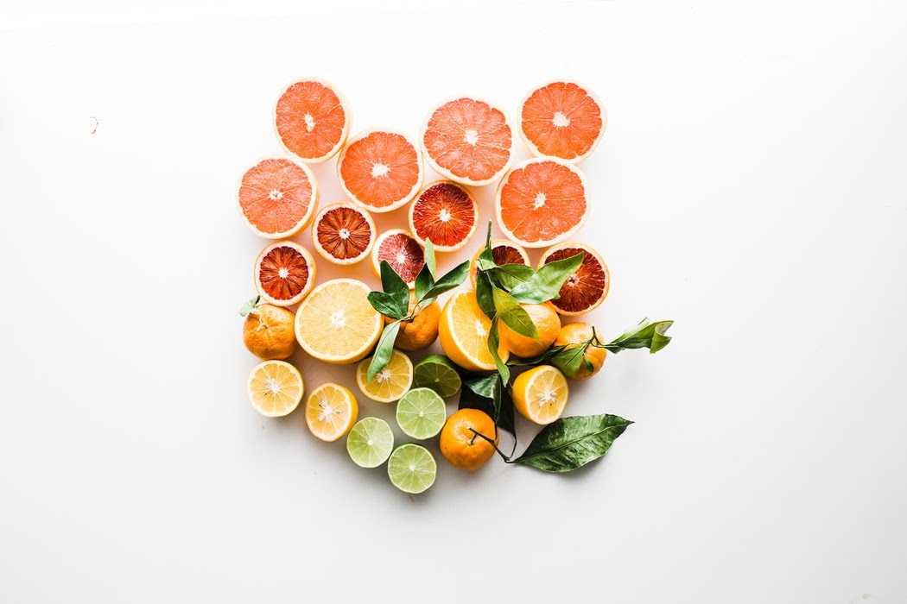
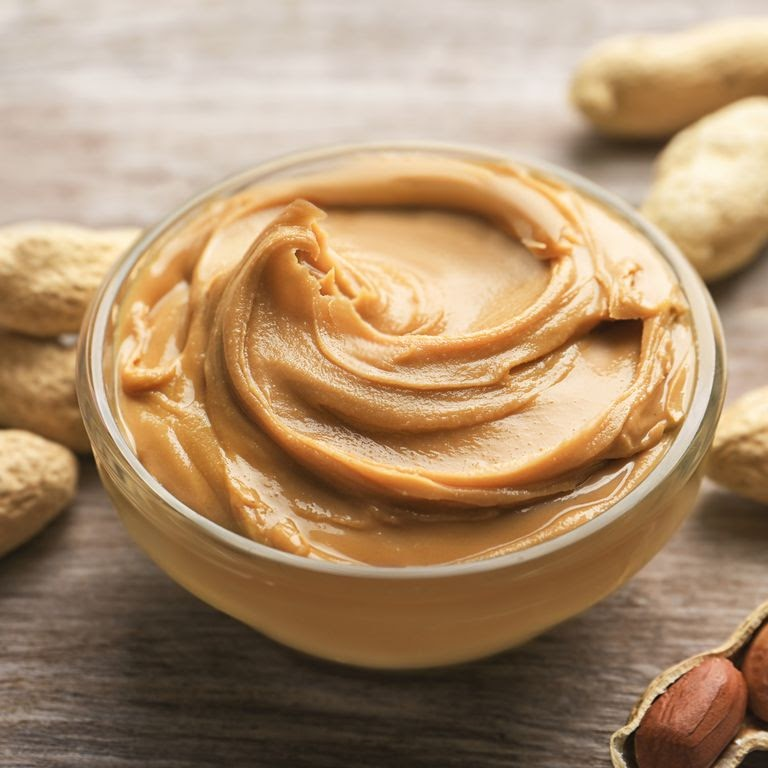

A alimentação para musculação é um dos temas de grande interesse entre frequentadores de academias.
Tanto é assim que há quem defenda que aquilo que você ingere é responsável por nada menos que 70% dos resultados.
Longe de entrar no debate quanto à participação de cada elemento nessa equação, nosso objetivo com este artigo é mostrar como você pode aliar alimentação e musculação para obter o melhor desempenho possível.
A partir de agora, você vai conferir dicas sobre o que comer e o que evitar na hora de montar o seu cardápio.
Não tem jeito: musculação sem alimentação saudável tem grandes chances de dar ruim.
O consenso entre médicos e nutricionistas é que aquilo que se come é o principal fator para promover o balanço energético no organismo, conquistado através da mudança do estilo de vida.
Já a atividade física, também um pilar importante na manutenção do peso, vai muito além da perda dos quilinhos extras.
Acima de tudo, promove ganho de saúde de maneira geral, contribuindo para uma melhor qualidade de vida.
E é aí que também entram os benefícios da musculação, que, além de ajudar a conquistar mais massa muscular e a tonificar o corpo, ainda potencializa o gasto calórico.
Uma boa alimentação é o combustível essencial para que os treinos aconteçam da maneira correta e apresentem resultados de forma muito mais rápida.
Caso contrário, não se surpreenda se apresentar alguns destes sinais bem no meio do treino:
Tontura
Enjoo
Fadiga
Hipoglicemia
Mas como é que funciona essa tal de alimentação fitness?
A seguir, você vai ver que, para montar seu cardápio pré e pós treino, basta escolher os alimentos certos.
Quem nunca ouviu falar que saco vazio não para em pé?
Nada mais apropriado do que adaptar este velho ditado ao assunto do nosso artigo.
Isso porque, que quem faz musculação, tem um grande gasto calórico, e, assim, o corpo requer alimentos que forneçam a energia necessária tanto para o momento do treino quanto para o pós.
Isso vale tanto para quem quer ganhar peso, quanto para quem quer emagrecer, tonificar os músculos ou simplesmente manter a forma.
Logo, o cardápio para quem faz academia precisa levar isso em conta.
Cada grupo alimentar vai representar uma função diferente para aquilo que o seu organismo precisa.
Uma dieta rica em nutrientes, proteínas e carboidratos é capaz de trazer um excelente equilíbrio energético – basta comer os alimentos certos nas horas certas.
Então, comecei a malhar, o que comer?
O pré-treino é o alimento que você vai consumir antes de começar a praticar a musculação.
Por isso, devem ser priorizadas as opções que oferecem aquela bomba de disposição necessária para você arrebentar no seu desempenho.
Aqui, os carboidratos deixam de ser vilões para se tornarem bem-vindos.
Isso porque esses alimentos viram glicose no organismo, gerando energia e potencializando ao máximo o seu treino.
Mas atenção: foque nos carboidratos saudáveis, aqueles com baixo índice glicêmico.
Frutas (banana, pera, ou sucos da fruta sem açúcar), aveia, vitaminas, açaí, batata doce, mandioca e carboidratos integrais, como pão, arroz, grãos e macarrão, são alguns exemplos.
O resultado é ainda melhor se você conseguir associar o consumo do carboidrato com alguma proteína, como frango grelhado ou queijo cottage.
Agora, uma dica de ouro: consumir pasta de amendoim antes de treinar ajuda a diminuir o índice glicêmico da refeição.
Isso significa que o alimento não permite que o carboidrato seja absorvido rapidamente, evitando a hipoglicemia durante o exercício.
Depois do treino, é preciso repor toda a energia gasta e dar atenção especial à recuperação dos músculos. Mas nada de sair devorando tudo o que encontrar pela frente, ok? Nesse momento de fome, é essencial resistir às tentações e focar sempre nas opções saudáveis.
É hora de incluir no cardápio as proteínas, que são importantíssimas no processo de tonificação e macronutrientes sagrados na dieta de qualquer esportista.
Você pode apostar em ovos, carnes magras, abacate e até nos famosos whey, suplementos protéicos usados por grande parte dos frequentadores de academias.
A Naked Nuts já trabalha com uma série de pastas de amendoim com whey na composição, com as deliciosas versões de chocolate branco.
Além disso, a pasta de amendoim, por ser bastante rica em vitaminas e nutrientes em geral, é uma excelente aliada na recuperação das fibras musculares que se rompem durante os exercícios de hipertrofia.
E já que o assunto é musculação, não podemos ignorar os micronutrientes essenciais nessa jornada para um bom funcionamento do nosso corpo.
É o caso das vitaminas do complexo B, por exemplo, sem as quais fica muito mais complicado estimular a ação do processo metabólico.
São elas: B1, B2, B3, B5, B6, B7, B9 e B12.
Além de serem famosas por favorecer o tônus muscular, as vitaminas do complexo B ajudam ainda na saúde da pele, dos cabelo e na prevenção de uma série de doenças.
E sabe qual é um dos alimentos mais ricos em vitaminas do complexo B? A pasta de amendoim!
O primeiro erro clássico de quem faz musculação é pular as refeições. O segundo é cortar 100% dos carboidratos, fonte essencial de energia. Mas há ainda os errinhos relacionados às escolhas dos alimentos para determinado momento do seu dia.
Agora, você já sabe que malhar de estômago vazio é furada.
Por outro lado, se encher de comida também não é a melhor maneira de alcançar os resultados esperados.
Procure evitar ingerir: Alimentos pesados de difícil digestão, como frituras, carnes vermelhas, salgadinhos, lactose, etc Produtos industrializados, como refrigerantes Alimentos que causam inchaço e gases, como feijão, couve-flor e excesso de açúcar.
Já que você mandou ver no “carboidrato do bem” antes do seu treino, não precisa devorar uma pizza inteira depois, concorda?
Em vez de ir com tudo para cima dos refinados, foque nas gorduras boas e nas proteínas, legumes e verduras, fundamentais para a hipertrofia.
Além disso, tem muita gente saindo da academia direto para o barzinho. Vez ou outra, e de forma equilibrada, tudo bem.
Mas, não se esqueça: bebidas alcoólicas contém um grande número de calorias vazias, além de causarem desidratação e comprometerem a formação dos músculos.
Fonte: https://blog.nakednuts.com.br/alimentacao-para-musculacao/